CMPH Project 3 · Group 12
Zhaoyang Chu · Zoutong Shen
Same gravity, wildly different outcomes.
[optional: HST Antennae / Cartwheel image, or remove]
Direct N² gravity, Plummer-softened, Numba-JIT'd:
\[ \mathbf a_i = -G\!\!\sum_{j\neq i}\! m_j\, \frac{\mathbf r_i-\mathbf r_j} {\left(|\mathbf r_i-\mathbf r_j|^2+\varepsilon^2\right)^{3/2}} \]
Stepped with velocity-Verlet (leapfrog), kick–drift–kick:
\[ \mathbf v_{1/2}=\mathbf v_0+\tfrac{\Delta t}{2}\mathbf a_0,\quad \mathbf x_1=\mathbf x_0+\Delta t\,\mathbf v_{1/2},\quad \mathbf v_1=\mathbf v_{1/2}+\tfrac{\Delta t}{2}\mathbf a_1 \]
\(\varepsilon\): a small softening length added to every separation, so two stars passing close don't feel a singular \(1/r^2\) kick.
Three components, positions sampled from their density profiles (Hernquist 1993):
Disk (surface density): \[ \Sigma_d(R)=\frac{M_d}{2\pi h^2}\,e^{-R/h} \]
Bulge: \[ \rho_b(r)=\frac{M_b\,a}{2\pi\,r\,(r+a)^3} \]
Halo (truncated isothermal): \[ \rho_h(r)=\frac{M_h\,\alpha}{2\pi^{3/2} r_c}\, \frac{e^{-r^2/r_c^2}}{r^2+\gamma^2} \]
\(G=1\) units: \(h=3.5\) kpc, \(M_d=5.6\times10^{10}\,M_\odot\), \(t=13.1\) Myr, \(v=262\) km/s.
\(\Sigma\,/\,\rho\) — surface / volume density
\(R\,/\,r\) — cylindrical / spherical radius
\(M_d\,/\,M_b\,/\,M_h\) — disk / bulge / halo mass
\(h\) — disk scale length
\(a\) — bulge scale radius
\(r_c\) — halo truncation radius
\(\gamma\) — halo core radius
\(\alpha\) — normalization (total mass \(=M_h\))
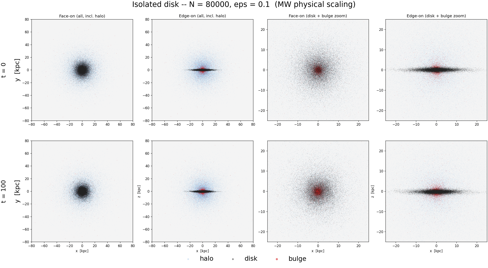
Velocities are set so the galaxy is already in equilibrium — it must not fly apart or collapse when released.
\[ Q=\frac{\sigma_R\,\kappa}{3.36\,G\,\Sigma}\;\gtrsim\;1 \]
\[ \frac{d\!\left(\rho\,\sigma_r^2\right)}{dr}=-\rho\,\frac{d\Phi}{dr} \]
Same total potential \(\Phi\), three different velocity prescriptions. Get this wrong and the "galaxy" relaxes violently in the first few steps.
| knob | effect on the spurious heating |
|---|---|
| \(N\) | ↑N → ↓heating (\(t_\mathrm{relax}\!\propto\!N/\ln N\)); 20k→80k cuts \(z_0\) drift 67%→24% |
| \(\varepsilon\) | softens close kicks; too small → extra heating, too large → smears the disk |
Converged choice: \(N=80\text{k}\), \(\varepsilon=0.1\) (0.35 kpc). Scale length \(h\) fixed <1%.
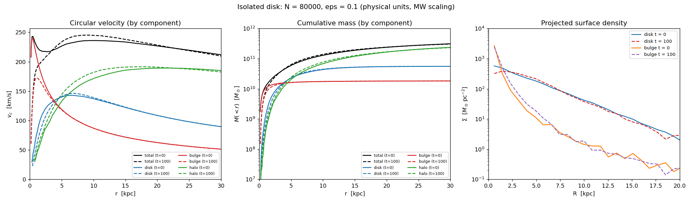
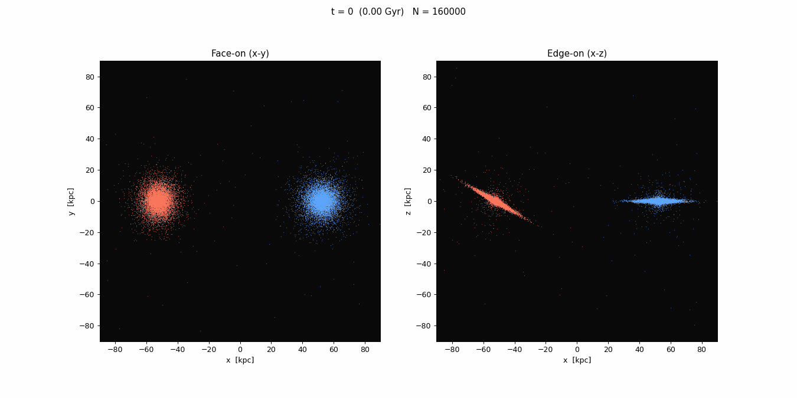
Two rotating disks → one pressure-supported blob.
\(\Sigma(R)\) is straight in \(R^{1/4}\): a de Vaucouleurs profile — the signature of an elliptical.
Bound & relaxed → virial theorem holds:
\[ 2T + U = 0 \]
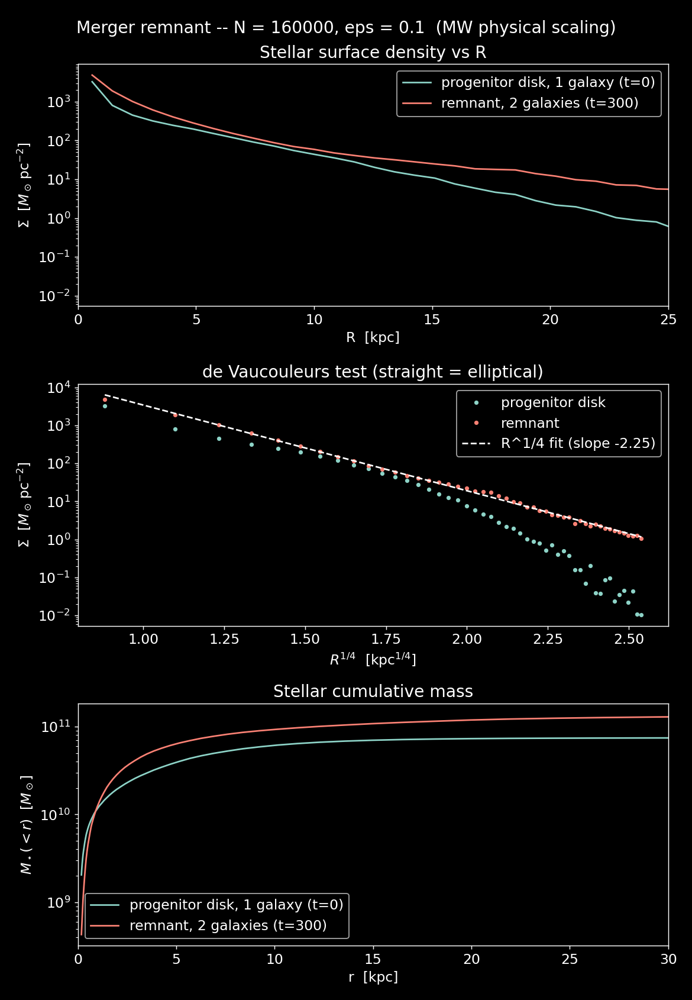
Axis 1 — Pericentre
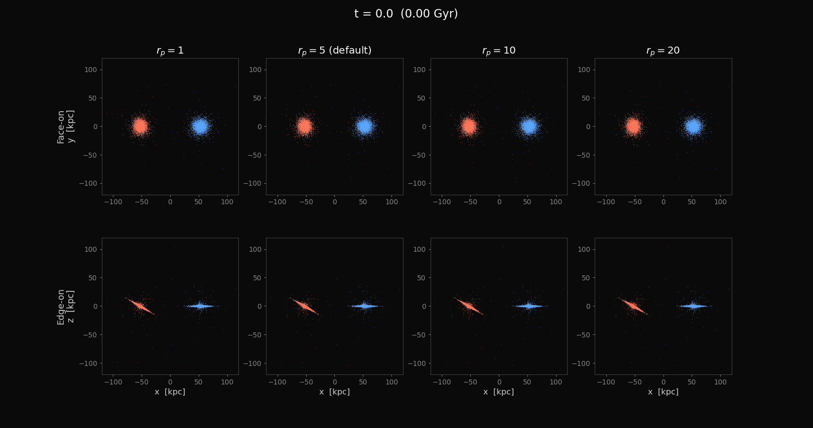
Dynamical friction sets it: \( \dfrac{d\mathbf v}{dt}\propto -\dfrac{G^2 M\,\rho\,\ln\Lambda}{v^2}\) — a faster, wider pass loses less energy.
Axis 2 — Inclination
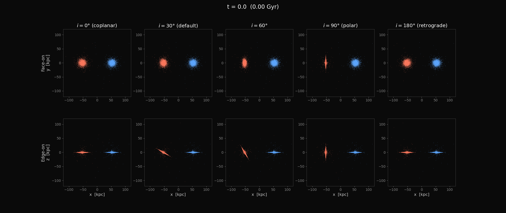
Axis 3 — Mass ratio
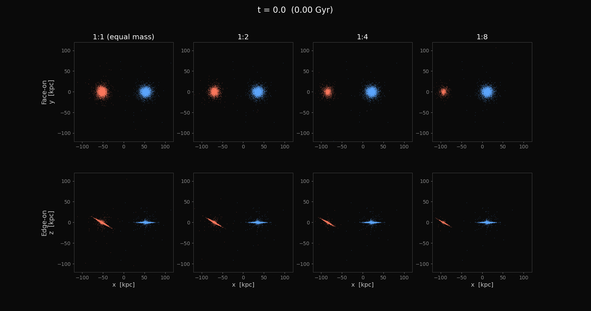
Minor mergers dominate the cosmic rate — they grow bulges without killing disks.
Axis 4 — Number
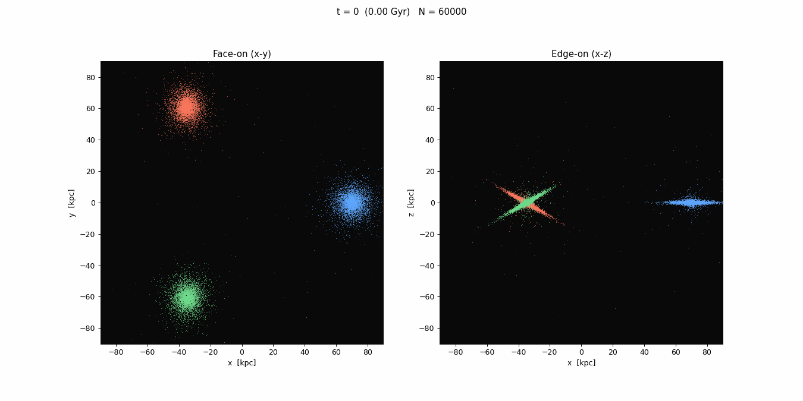
Axis 5 — Collision axis
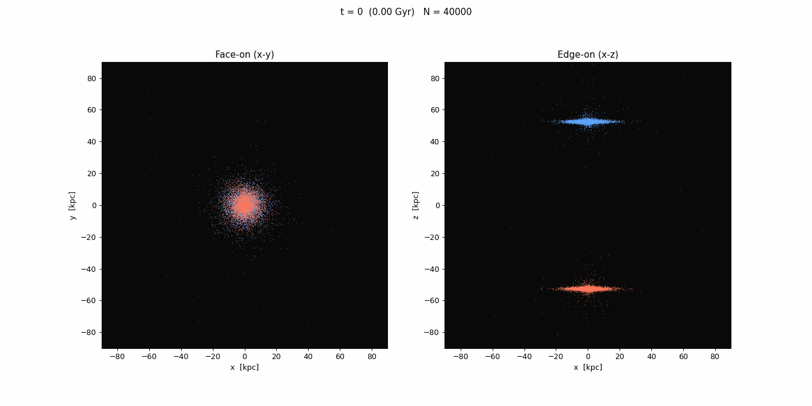
\[ \Delta v \sim \frac{2GM_\mathrm{p}}{b\,V} \]
Caveat: equal mass rings both disks; the real Cartwheel is a small intruder through a big target.
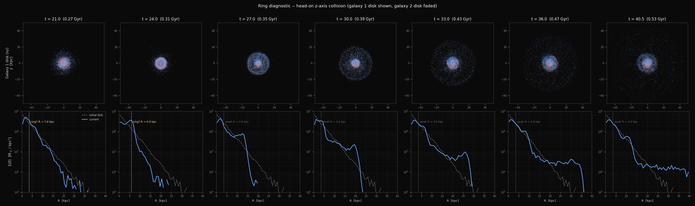
| Axis | Result |
|---|---|
| Pericentre | sharp merge / flyby threshold (friction-set) |
| Inclination | prograde → tails; retrograde → none |
| Mass ratio | merger → accretion continuum |
| Number | 2-body order → 3-body chaos |
| Collision axis | head-on → Cartwheel ring |
All from one self-gravitating N-body code + equilibrium ICs, validated against Kepler and the finite-N relaxation law.
Limits: collisionless (no gas/SF), finite N, direct-N² (no tree). Each is a clear next step.
Questions?
Code & figures: github.com/zoutongshen/CMPH_group_project_3
↓ for detail figures.
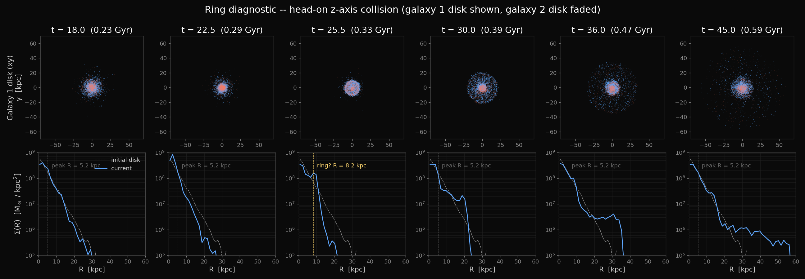
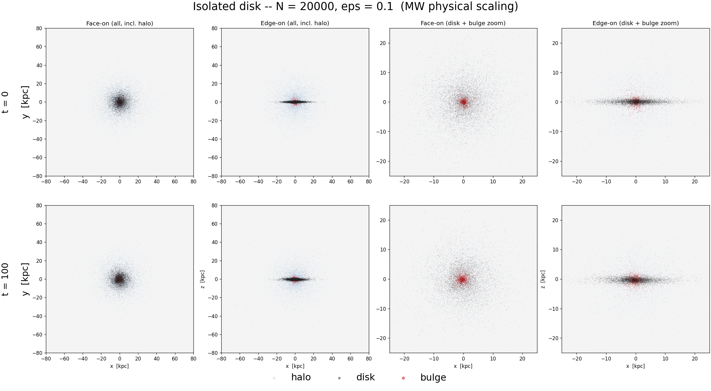
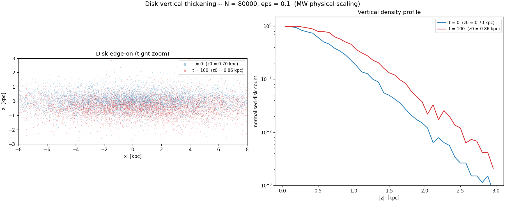
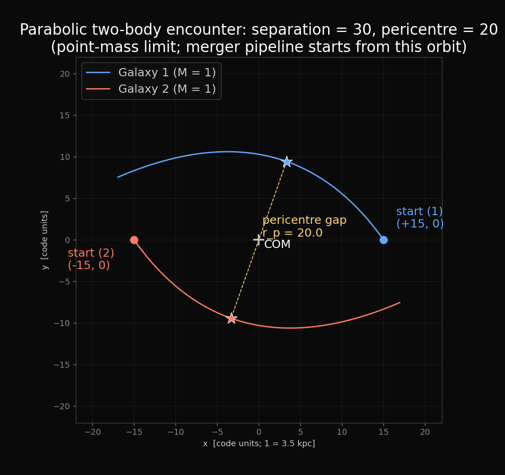
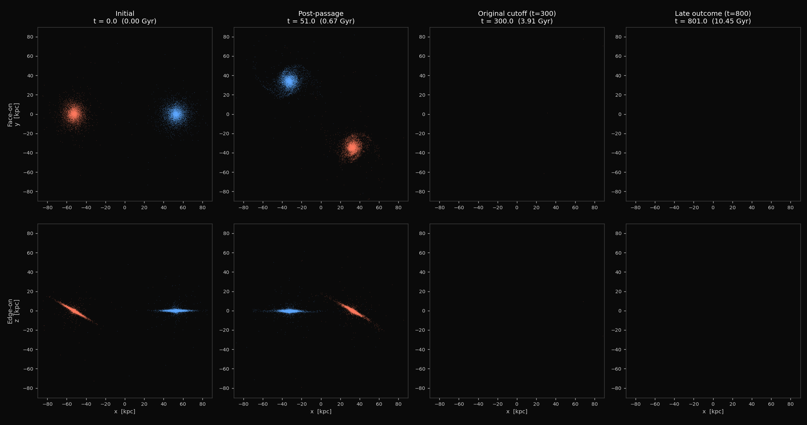
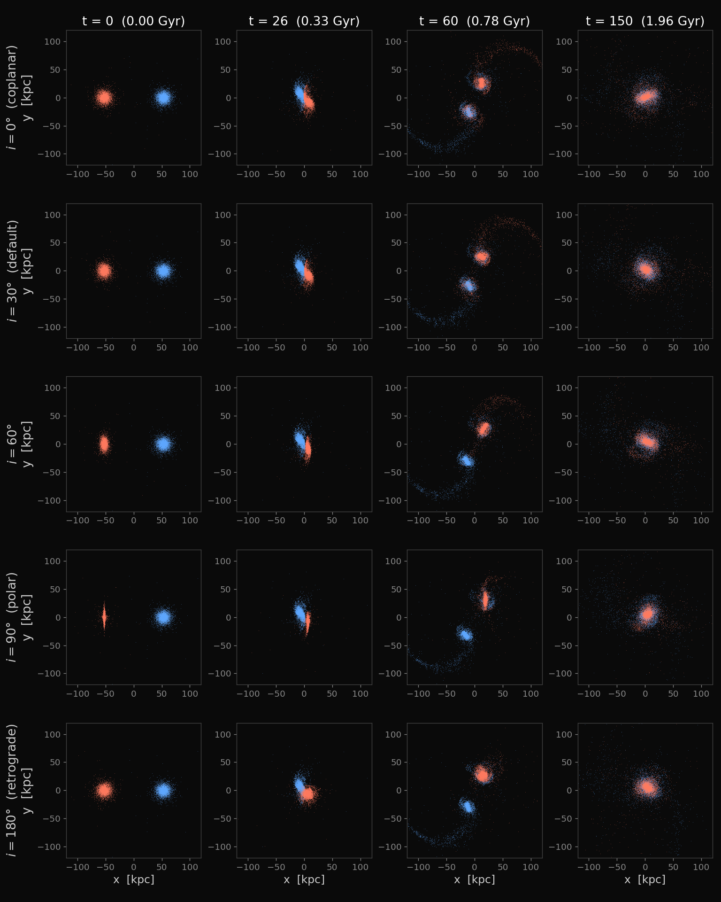
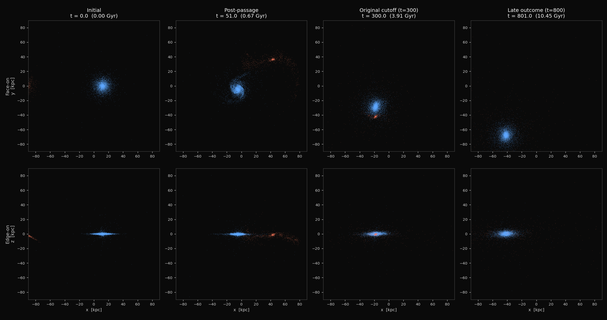